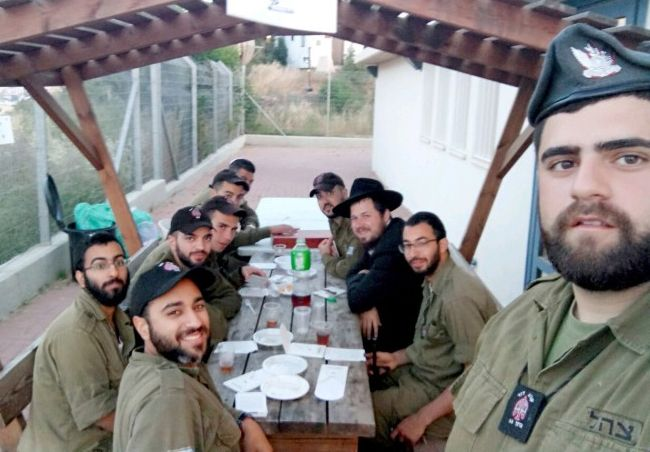

Connecting Jews to the Rebbe During This Time of Concealment
After 25 years of concealment, how do we connect Jews to the Rebbe? When we speak to them about Moshiach, does it turn them off? How should opposition be handled? Is it not bizarre to suggest that someone write to the Rebbe now? * We asked these and other questions to two shluchim, Rabbi Yehuda Lifsh, shliach in Ramat Aviv 3, and Rabbi Yehuda Leib Ginsberg, shliach in the Carmel Tzorfati neighborhood in Haifa.
By Mendy Dickstein

R’ Ginsberg: First, when using the Rebbe’s approach, it’s impossible to say that anyone is distant. Every Yid is actually quite close, although perhaps this is not yet visible. The Rebbe Rayatz told Rabbi Shmuel Levitin that our job is to reveal the spark within the concealment (for it never goes out).
What’s needed to illuminate him and reveal the spark within that is connecting him to the source of light, the Nasi HaDor. When you place a lantern, people gather round.
Obviously, when the mekurav has whom to be close to, he feels more connected.
Just today, I heard a remarkable story from a woman. Thirty years ago, she went to 770, and since they did not explain to her exactly where to go, she innocently walked through the door that leads from the parking space (since then blocked off) to Gan Eden HaTachton (in the days when the door wasn’t locked). She saw a door and knocked. It was the Rebbe’s office.
When R’ Leibel Groner came and asked her what she was doing there, she said, “What do you mean? I came to my Rebbe.” The Rebbe then told her to write all her requests on a paper and give it to the secretary, and her requests were fulfilled!
R’ Lifsh: After many years of working with Jews to whom Chassidic practices are, at first, foreign and even strange, I can confidently say that I’ve seen people who were put off by all sorts of Chabad practices, starting with spitting in Aleinu and not saying the prayer for the State, not saying Hallel or a special prayer on Israel Independence Day, and ending with drinking vodka at farbrengens. But when it comes to Moshiach, I have yet to see anyone who stopped coming to daven with us because of it.
Even if it is initially hard for people to accept ideas about Geula, we have a serious talk about it and learn the topic thoroughly. A person feels respected when he is spoken to pleasantly and intelligently. When he sees that you are serious and the matter isn’t a joke and we are not just repeating any old declaration, he responds accordingly. If you gave a talk that he liked with a nice idea that was presented well, then the Yechi that you said at the end of the talk, and even if you said “the Rebbe Melech HaMoshiach” as you spoke, are regarded seriously.
How does talking about it get them to relate?
R’ Lifsh: When a person realizes that he is talking to a serious person who devotes himself to people and learns with them, and he runs a shul and can also spend hours standing putting tefillin on other Jews, then he will suppose that what he has to say about Moshiach is serious.
Rabbi Gluckowsky told me a story that he heard from the mashgiach of the central yeshiva in Kfar Chabad, Rabbi Moshe Naparstek a”h. When the Rebbe asked that they build Kfar Chabad Beis, there were numerous obstacles from the authorities, who wanted to keep the land for the purpose of expanding the airport. One day, R’ Naparstek, R’ Shlomo Maidanchek a”h, who was the head of the local council , and the Partisan, R’ Zushe Wilyamowsky a”h, met with a senior official at the Interior Ministry whose influential position was such that he could be the deciding voice on the matter. This was going to be a decisive meeting.
In the middle of the meeting, when the discussion got heated and the administrator suggested alternate places to build Beis Rivka, R’ Zushe got up, went over to the map of the region that was hanging in the office, pointed at the area in question and said to the official in a matter-of-fact way, “But the king wants Kfar Chabad Beis to be here!”
The official nodded and said, “If the king said so, that’s the way it will be!” And that is how Kfar Chabad Beis came to be.
We see that when we stick with the truth, seriously and matter-of-factly, the message gets through.
And yet, how do you talk to someone about hiskashrus and writing to someone he doesn’t know, never met and never spoke with, someone who thinks the Rebbe is not of this world?
R’ Lifsh: The truth is that for a person who is not religiously observant, there is no difference between putting on tefillin, beating aravos, and understanding the belief that the Rebbe is Moshiach and will redeem us, or writing to him through his Igros Kodesh. We had people on Yom Kippur who wanted to run out of shul when everyone bowed on the floor during the davening. Think about it; banging willows on the ground looks a lot weirder than the idea of Moshiach and Geula!
People aren’t fools. They know there is a Rebbe who sent you here. A person knows that he is davening in a Chabad House, and he meets Lubavitchers. It’s the most natural thing for him to hear about the Besuras Ha’Geula and the Goel. Actually, if he spent time with you and didn’t hear about Moshiach, he would start to think something is amiss!
So, when others hear us speaking matter-of-factly about the Rebbe MH”M and how he will imminently be revealed and redeem us all from galus, people want to connect to him, and through writing too.
R’ Ginsberg: The concept of “Rebbe” is a revelation of G-dliness in this physical world. None of us saw G-d and the Rebbe is the most tangible manifestation of the revelation of G-d in the world.
R’ Yosef Evron, gabbai in the shul in our neighborhood, told me that in 5744 or 5745, he was in New York on business. He also met with the Rebbe at that time. He entered the big zal which was full, and since by nature he does not like to stand out, he chose a quiet corner on the side.
He said, “There was noise and commotion and masses of people, and suddenly, the Rebbe walked in. In a moment, a path formed and the Rebbe walked to his place. I felt that this was the splitting of the sea.
“I thought to myself, it is all fine and well that there are lots of people here, but what is there to show that he is truly a Rebbe? Then, as I thought this, the Rebbe turned around and looked at me. He even made an encouraging motion toward me a few times with his hand. That was the moment that I decided to do teshuva.”
Are mekuravim who are taking their first steps receptive to the Rebbe being Moshiach and that we need to accept his malchus?
R’ Lifsh: It’s important to remember that we are not acting in a vacuum. Today, the media, and mainly the Internet, are full of people, lectures and prophecies that are selling lies or half-truths about the End of Days. When people meet a Lubavitcher (what can you do, the reputation of Lubavitchers as representatives of Moshiach precedes them), they expect to hear clear views on the subject just as they would expect to hear the view of any professional in any other field.
What could be more natural than a Lubavitcher Chassid, who is proficient in Inyanei Moshiach, explaining that there is a king from the House of Dovid, and he possesses the signs that the Rambam lists. Other people, even religious ones, don’t always know the signs enumerated in the Rambam. They don’t know the simplest things. They don’t know where Geula appears in the Torah. This is precisely why we are here, and when complicated topics are clarified and presented in an organized way, the desire to be part of this amazing reality comes naturally.
In our Chabad House, there hangs, in a prominent place, the p’sak din of hundreds of rabbanim which says the Rebbe is Moshiach. Anyone who is exposed to this immediately understands that our belief is a sacred and serious matter.
R’ Ginsberg: When speaking about Moshiach and Geula, you can learn it and are not obligated to connect it with the Rebbe specifically. However, such learning feels like it’s a study about something abstract. A few years ago, we learned the book Yemos HaMoshiach as part of an ongoing shiur every Shabbos. At first, I thought that this is the “straight and direct path,” but I eventually realized that it wasn’t enough. It presents the material promises of the future times as though they will happen in a thousand years, G-d forbid. The book does talk about who Moshiach will be, but the message does not come across as something tangible.
It’s only when we learn the latter sichos of 5751-5752, the D’var Malchus, that people get that this is happening now. Just last week, we learned the piece where the Rebbe says, “Behold, immediately, the Rebbe, my father-in-law enters,” … “We are seeing miracles like the exodus from Egypt etc.,” and many other examples. These are amazing sichos that present the Geula as something happening now, not in the future.
Is it preferable to learn these topics in depth and suffice with that, or is there also an inyan of proclaiming Yechi?
R’ Ginsberg: Sometimes, it seems as though it’s superficial, but the makif definitely affects the p’nimius. Another line, another sicha and another farbrengen, and things are absorbed.
In our shul, we proclaim Yechi after davening and there’s even a sort of competition about who will say Yechi. One time, when we visited the yeshiva in Tzfas, after the davening and the singing of “Al Tira,” the chazan began saying Mishnayos, as is customary. But since we have no mourners and we don’t say Mishnayos, one of the mekuravim did not understand why they were delaying. He decided to proclaim Yechi himself, loudly. It was moving to see how what is done as something natural penetrates so deeply.
Obviously, it is very important to learn the subject from s’farim, especially from the Rebbe’s teachings. This is in order to be able to live and internalize it. When we connect it to the Goel, then even when questions arise – like “What about Gimmel Tammuz?” and “Who says he is Moshiach?” – they are answered with simple explanations. People understand that we have merited to live in the generation of Geula.
How does all that play out in everyday real-life terms?
R’ Lifsh: There are the activities that are directly connected to Inyanei Moshiach and Geula, like a shiur on the subject that takes place regularly once a week. However, generally speaking, we try to see to it that every activity is permeated with the Inyan of Moshiach. When things are that way, the desire to connect to it comes as a matter of course and not only during a specific outreach activity.
Every year we give out matzos. On the package we have a sticker that says, “In Nissan they were redeemed and in Nissan they will be redeemed in the future.” We attach a letter that explains the connection between matzos and Pesach to the future Geula. On Purim, we turn the wine bottle that we give out to mekuravim in the mishloach manos into the “Wine of the Geula” and “Kos shel Bracha.” The same goes for other items in the mishloach manos.
At the public s’darim, for example, when the door is open for Eliyahu HaNavi, I first speak about the importance of asking for the Geula at this time and about the anticipation of the hisgalus of the Rebbe MH”M. When you are really invested in the subject, then each activity becomes infused with Geula and Moshiach.
R’ Ginsberg: I’ll answer your question with an example from our community. There is a professor who came a year and a half ago to daven in our minyan. At first, he had a hard time with the approach of Chabad and its opposition to Zionism. He also struggled personally with Inyanei Moshiach. I promised him that in our shul nobody is obligated to believe what he doesn’t want to believe in, and he continued coming. At first, he came once a month. Now, he doesn’t miss a shiur in Chassidus before the davening on Shabbos. He also stays for farbrengens until the end, and he always says that in Chassidus we see the real Zionism.
Last Shabbos we learned the maamer “Basi L’Gani,” and when we learned that we are the seventh generation, he immediately understood that there is nothing to fear or to hide from, for this is the simple truth. The Geula is already here and we are just waiting for the immediate revelation of the Goel.
Can you teach someone about Torah and mitzvos without connecting him to the Rebbe, Nasi Ha’dor and the Besuras Ha’Geula?
R’ Lifsh: The only thing that can change a Jew’s reality is, as the Rebbe says in the sichos of Shabbos Parshas Tazria-Metzora and Balak 5751, when he learns about Moshiach and Geula. The Rebbe even says why: because the Torah changes a person from within as relates to every area in life. When a person learns a maamer Chassidus, he suddenly begins to see G-dliness as real. When a person learns Geula and Moshiach, he starts seeing the world from a Geula perspective. When you learn the Rebbe’s teachings, in which the Rebbe invested his essence, that is how you connect to him.
On a practical level, in my experience of recent years, I sum up a person’s connection to the Rebbe in three stages, each of which has its effect, and together they transform him into a mekushar.
Stage One is connecting a person to a community. When a person learning about Judaism still hesitates about whether to move forward, when he knows not only the shliach but the community, and he finds another community member that he feels a kinship with, this helps him in the teshuva process. He discovers within the community that person who is close to his heart, who will provide the emotional support along with the learning and realization of the necessity to commit to Torah and mitzvos. Every member of the community provides his personal point of connection with that individual, and then comes the stage of hiskashrus to the Rebbe.
Stage Two, which has a tremendous effect, is immersing in a mikva. I don’t know how to explain it rationally, but I can testify about mekuravim who were hesitant and doubtful in general and about hiskashrus to the Rebbe in particular, that they moved past these struggles after they immersed in a mikva.
Stage Three, which is the most significant, is writing to the Rebbe. As mentioned before, those people to whom Torah and mitzvos are completely foreign are more amenable to writing to the Rebbe and putting the letter inside a book of his than others are. Those with a religious background always have questions and complaints about it. But no need to panic, because there are clear answers that we can provide for everyone as far as any questions they may have in relation to writing to the Rebbe in these times.
Here’s a story of someone who became a mekushar to the Rebbe. Yehuda Leib (Leonid) Schildkraut came from the CIS with the great wave of immigration in the 90’s and settled in Ramat Aviv 3. He was completely disconnected from anything religious. The many years of communism had left him with zero knowledge of Judaism.
I walk around the neighborhood in order to get to know people. When I see signs of mourners in a building, I go up to console them and take an interest in their needs. That is how I met Yehuda Leib. A sign announced the passing of his aged mother.
When I went up to his apartment and he saw me and how I was dressed, he lit up. He told me that many years ago, his father passed away while they were living in Tashkent and every day, for an entire year, prayers l’ilui nishmaso took place in their home. At first, I didn’t understand what he meant. I tried correcting him. I said it’s a week that we pray in the niftar’s home, but he insisted his story was accurate. Another typical Russian fellow who was there also told me that even after the Shiva and the shloshim, the prayers continued in his father’s house. It seems the shul moved to their home for that first year of mourning.
This was a good opportunity to connect him with our shul and community. When I consoled him over the loss of his mother, I added that if l’ilui the soul of his father they had a minyan for a year, despite the difficulty and danger that surely entailed under communist rule, then how much more so was it his obligation to come to shul and daven with a minyan that year of mourning. He accepted that, and that is how he became involved with Judaism.
One day, I read a miracle story of the Rebbe about Rabbi Sholom Hecht of New York who had no children for several years. During the Purim farbrengen of 5718/1958, the Rebbe surprised him and publicly told him that when they stopped calling him Sidney, and called him Sholom, he would be shaleim (whole) in body and soul and would have a child the following year. Exactly a year later, his daughter was born, and he now has generations from that daughter (and a son who was born later).
I told this story during a Chassidishe farbrengen when Yehuda Leib was present, who had been called Leonid until then. He immediately decided that if this is what the Rebbe wants, he was willing to do it himself. After checking out what he was named at his bris, he started calling himself Yehuda Leib and he asked his family and friends to call him only by this name.
Another story that highlights his great hiskashrus to the Rebbe was when I retold a story about a woman from England, of the Weingarten family, who was very sick and couldn’t eat or digest anything. Her condition deteriorated rapidly, and doctors had no cure for her.
The local shliach, who knew the family, convinced the husband and wife to go to the Rebbe and ask for a bracha. The husband was very skeptical about asking for a bracha but agreed to go after being urged by the shliach. The shliach joined them on the flight from London to the U.S.
How disappointed they were when the Rebbe advised them to go to a certain doctor in their city and ask him for a special diet for her. The woman had already been examined by many famous doctors and had been treated with the best and latest treatments. She did not believe this advice would help. At this point though, the shliach urged the couple to go to this doctor and get a diet from him. Needless to say, the woman was completely healed.
The couple flew to the Rebbe to thank him. They had yechidus and thanked the Rebbe for the bracha and the good results. In the middle of the yechidus, the Rebbe gently asked them whether they would agree to meet with the Rebbetzin. The couple said yes, and the Rebbe called the Rebbetzin and told her that special guests from London were going to visit. Then he called the secretary and told him to take them to his house in his private car.
Rebbetzin Chaya Mushka welcomed them most graciously. She explained that she wanted to meet the first people who travelled specially to thank her husband for his prayers on their behalf.
This story made a big impression, but I had no idea how moved Yehuda Leib was by it. A few days later he said to me that because of this story, he also decided to fly to the Rebbe, without any request or need, just to say thank you for the great chesed in sending his Chassidim to his neighborhood, who brought him back to Judaism and connected him to the Rebbe.
I must say, though, that despite his being mekushar to the Rebbe, Yehuda Leib is still not religiously observant in the conventional sense.
One of his close neighbors is the head of the Yesh Atid party, Knesset member Yair Lapid. When that party started, Yehuda Leib was very active. Even after he became interested in Judaism and connected to the Rebbe, he remained one of the devoted members of the branch of the party in Tel Aviv and one of its supporters.
A few months ago, the country was in an uproar in advance of the municipal elections. Each of the parties tried to maximize their chances by way of extreme messaging. Yesh Atid in Tel Aviv began an anti-chareidi campaign, which was intended to fire up their base. Yehuda Leib, one of the veteran activists in the party, used his influence to significantly mitigate the campaign that planned on attacking religious Jews in Tel Aviv.
Beis Moshiach (staff). "Connecting Jews to the Rebbe During This Time of Concealment." Beis Moshiach, no. 1153 (February 7, 2019).